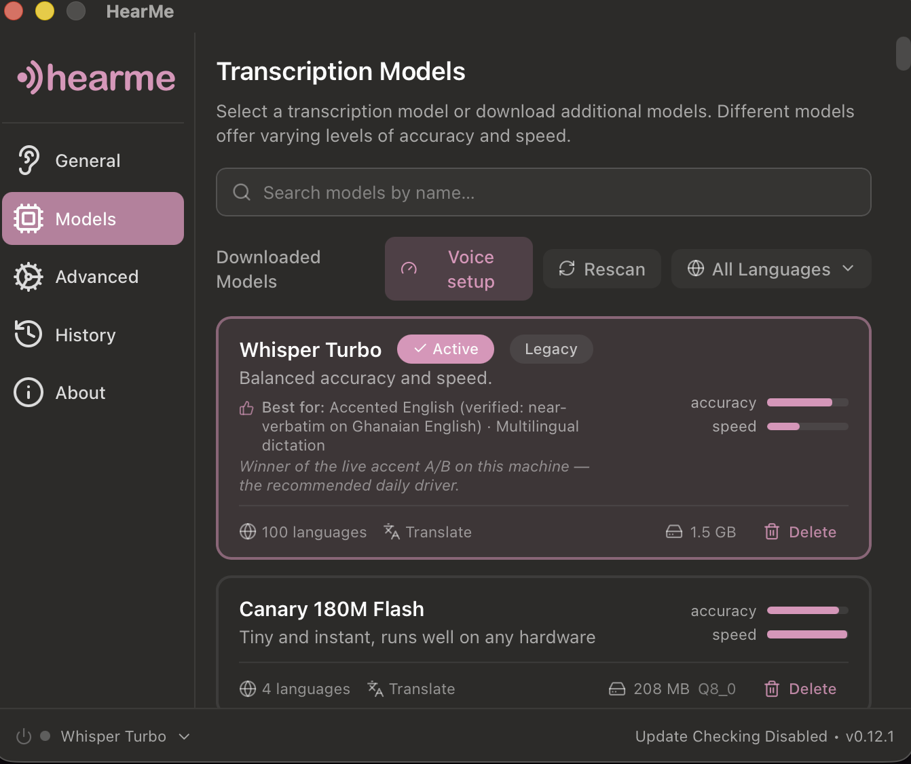
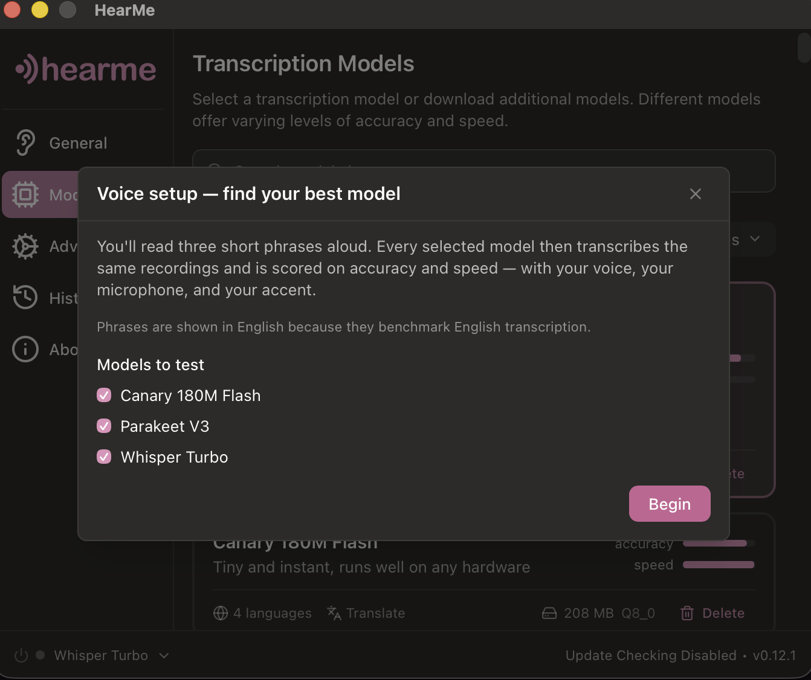
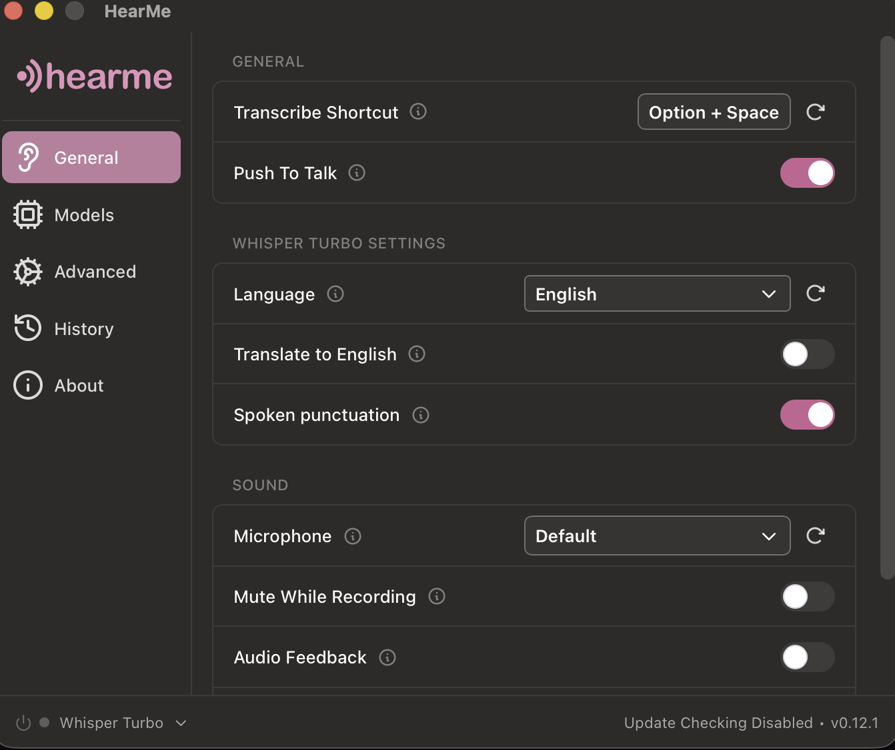
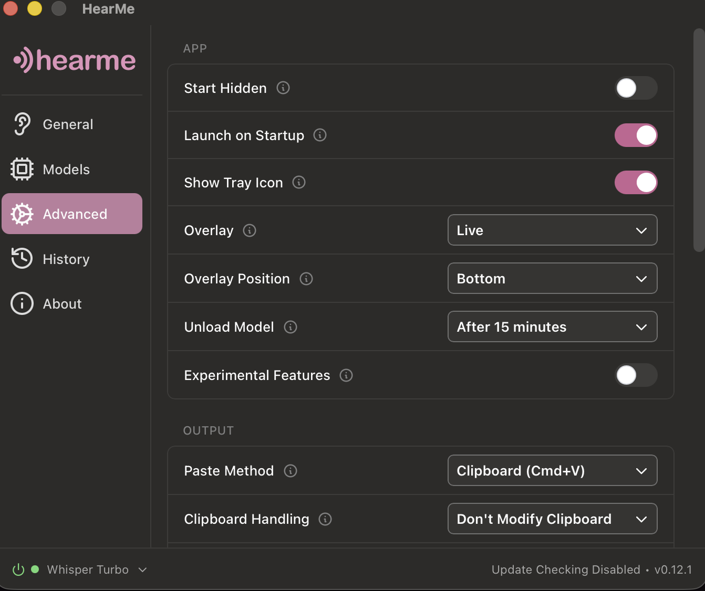

Hold a key, talk, release — your words land at the cursor, in any app. Every model runs on your machine, and HearMe measures which one truly hears your voice, your microphone, your accent.
Free, MIT-licensed. Windows & Linux builds are new — field reports welcome.
Meet Kwame at the Accra office at half past three.
Speech models are graded on American and European voices. Tested on West-African-accented English, the chart-topper didn't error, didn't warn — it just silently dropped six words in every ten. Another model, further down the same chart, was near-verbatim.
That's not one laptop's bad luck. Stanford measured nearly double the error rate for Black speakers across five major vendors — the headline numbers are earned on U.S. benchmark audio, not on voices like these.
You can't see that on a leaderboard. You can only hear it — on your own voice.
Voice setup, built in: read three short phrases once — the third is made of your own names and jargon — and every model on your machine is scored on accuracy and speed against your recording. One click applies the winner. As far as we can find, no other dictation app measures this — the rest hand you a model menu and wish you luck.
Illustrative run on Ghanaian-accented English. Your ranking will differ — that's the entire point.
Highlight a rough paragraph, hold the key, say "make this formal." A local model (Ollama) rewrites it in place. Nothing sent, nothing retained.
Words appear while you're still speaking, then settle into the cleaned-up text when you release. Experimental, macOS-only for now, and honest about it.
Kwame, Adjoa, cedis — names and jargon spelled right, with one-click suggestions mined from your own dictation history.




Cloud providers aren't disabled — they're removed from the code, and scrubbed from old settings on load. The only network use is the model download you trigger once, checksum-pinned. Run this while dictating (macOS/Linux — on Windows, watch the app in Resource Monitor's network tab):
HearMe went from fork to shipped, adversarially-reviewed product by one developer pairing with Claude Fable 5 — spec, code, reviews, docs, this page. I take on a small number of client builds: internal tools, automations, software that has to keep your data yours. Open a project inquiry.